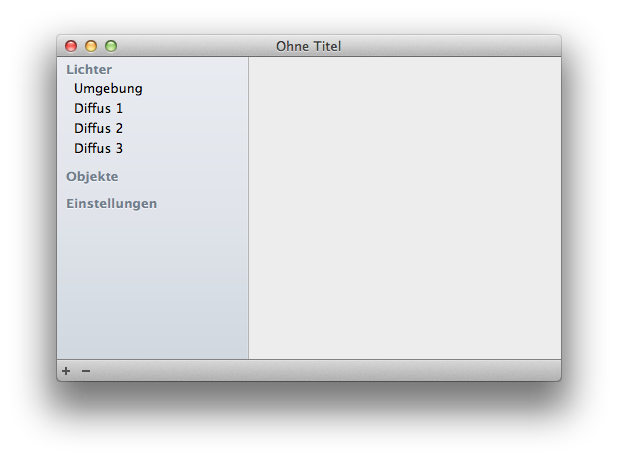
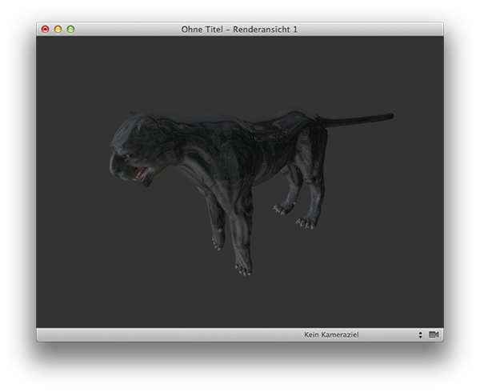
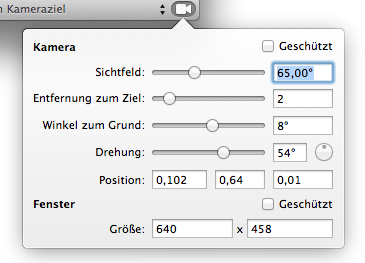

Ein Dokument in GLLara enthält zwei Arten von Fenstern: Ein einzelnes Dokumentenfenster und beliebig viele Renderfenster.
Im Dokumentenfenster können sie alle Einstellungen vornehmen, neue Modelle hinzufügen oder löschen und Posen einstellen oder die Modelle bearbeiten.

Die Liste links enthält ihre aktuelle Auswahl. Sie finden dort die Einstellungen für die Lichter und alle plazierten Modelle. Ferner werden hier in Zukunft weitere Einstellungen zu finden sein. Beim Öffnen eines neuen Programms ist die Liste der Modelle noch leer. Sie können Charaktäre, Objekte und Szenerien laden.
In der rechten Hälfte des Fensters können sie die Einstellungen der links gewählten Objekte verändern, auch wenn mehrere Objekte ausgewählt sind.
Mit den Buttons unten können sie weitere Modelle hinzufügen oder ausgewählte Modelle entfernen.
Sie können beliebig viele Renderfenster öffnen, die alle die selbe Szene anzeigen. Damit können sie beispielsweise auf einem Fenster die gesamte Szene anzeigen, und auf einem anderen näher an die Details gehen, um sie zu bearbeiten. Die Positionen und Kamerawinkel der Fenster werden im Dokument gesichert und stehen auch beim nächsten Öffnen wieder zur Verfügung.
Durch den 3D-Raum navigieren sie mit Tastatur und Maus oder Trackpad: Navigieren im 3D-Raum

Mit der Liste unten rechts können sie Kameraziele auswählen. Diese werden von platzierten Modellen definiert und bieten vorgefertigte Positionen für die Kamera an, um die sie herumrotieren können.
Unten ganz rechts öffnen sie die Fenstereinstellungen.

Hier können sie explizit bestimmte Größen und Winkel auswählen. Sie können auch die Kameraposition und die Fenstergröße schützen, so dass sie beide nicht versehentlich ändern können.